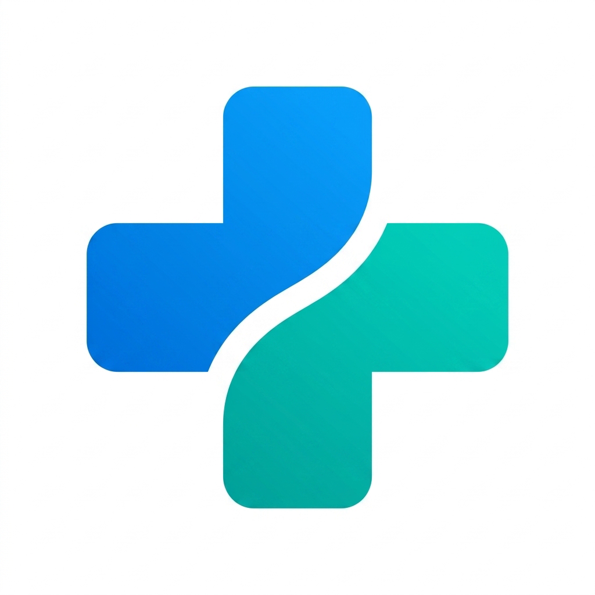
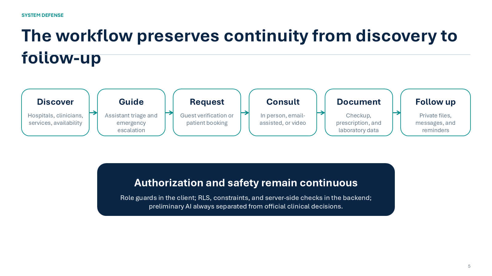
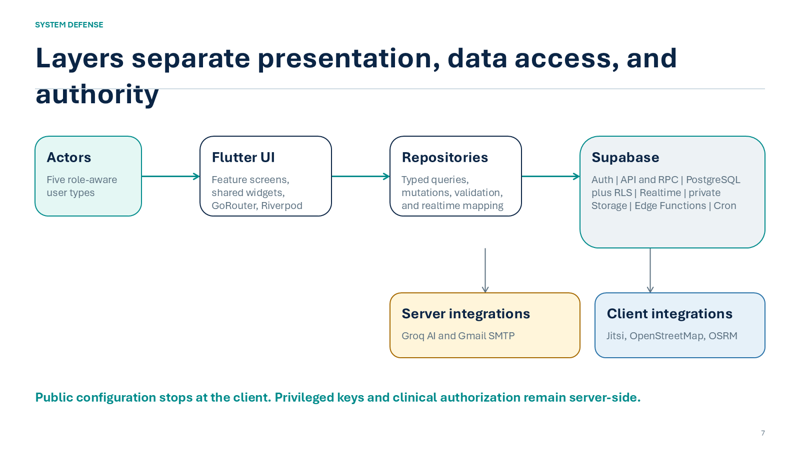
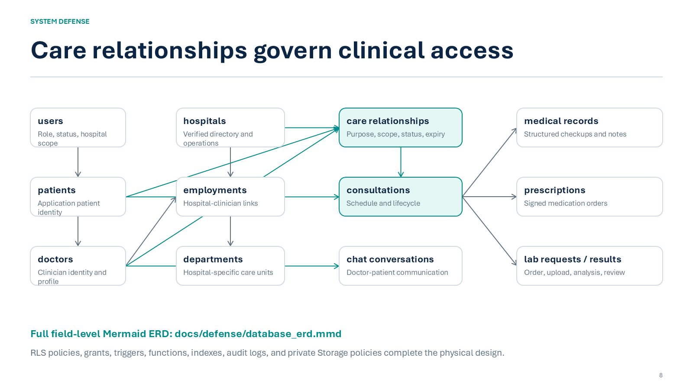

| Project title | CareNavigator PH |
| Prepared for | System / project defense |
| Proponents | [Insert names] |
| Adviser / Panel | [Insert name or panel] |
| Date | 02 September 2026 |
Defense-ready working draft based on the current repository implementation and local verification.
Executive Summary
1. Project Title and Description
2. Project Objectives Defined
3. Scope and Limitations Identified
4. Updated System Flowchart and Architecture Diagram
5. Database Design (ERD / Schema)
6. Project Progress Report (Current Accomplishments)
7. Defense Conclusion
Appendix A. Source-of-Truth Locations
CareNavigator PH is a Flutter mobile-and-web healthcare-navigation and digital-care platform. It unifies verified hospital and clinician discovery, safety-aware care guidance, guest consultation intake, authenticated patient and doctor workflows, hospital operations, and platform governance in one role-aware system backed by Supabase.
The current prototype demonstrates an end-to-end care pathway and a deliberate security model: UI guards support usability, typed repositories isolate data access, while JWT validation, Row Level Security, private Storage, constraints, triggers, and server-side authorization enforce access. The project is functionally substantial, but it is not represented as production-ready; live credentialed journeys, provider/device validation, formal compliance work, and visual-baseline review remain.
CareNavigator PH helps users find an appropriate healthcare facility and continue through consultation, clinical documentation, communication, and follow-up without losing context. Guests can discover verified care and submit a protected consultation request. Patients can book and manage care, communicate with clinicians, and access authorized records. Doctors can manage schedules, consultations, structured checkups, prescriptions, laboratories, and review workflows. Hospital administrators operate assigned facilities, while super administrators manage platform governance.
The application uses one adaptive Flutter codebase. GoRouter manages deep links and role-based routing, Riverpod manages state and Realtime streams, typed Dart repositories form the data-access boundary, and Supabase provides Auth, PostgreSQL, RLS, Realtime, private Storage, RPCs, Edge Functions, triggers, and scheduled jobs. External integrations include Groq, Gmail SMTP, Jitsi, OpenStreetMap, and OSRM.
To design and implement a secure, responsive, role-aware healthcare platform that helps people discover appropriate care and supports the care lifecycle across authorized guests, patients, clinicians, hospital personnel, and platform administrators.
| Area | Included capabilities |
|---|---|
| Public access | Hospital and clinician discovery, maps/routes, assistant guidance, guest consultation request and verification |
| Patient care | Booking, rescheduling/cancellation, consultations, messages, notifications, records, prescriptions, diagnostics, files, profile and preferences |
| Doctor care | Patient relationships, scheduling, consultation lifecycle, structured notes/checkups, prescriptions, laboratory requests/results, document review |
| Hospital operations | Appointments, staff, departments, services, facilities, beds/capacity, emergency-room status, reports and audit views |
| Platform governance | Hospital approval, accounts, permissions, settings, analytics, security, maintenance and audit |
| Technical platform | Flutter, GoRouter, Riverpod, typed repositories, Supabase Auth/PostgreSQL/RLS/Realtime/Storage/RPC/Edge Functions/Cron |
| External integration | Groq AI, Gmail SMTP, Jitsi, OpenStreetMap and OSRM |

Figure 1. Core CareNavigator PH workflow from discovery through protected follow-up.
The flow preserves user and clinical context across discovery, guidance, consultation entry, scheduling, care delivery, documentation, and follow-up. At every transition, the system separates usability controls in Flutter from authoritative policy and data checks in Supabase.

Figure 2. Layered client, repository, Supabase, and external-service architecture.
Editable Mermaid sources for VS Code are provided in docs/defense/system_flowchart.mmd and docs/defense/system_architecture.mmd. The companion docs/defense/CareNavigator_PH_Diagrams.md supports Markdown Preview with a Mermaid extension.

Figure 3. Defense-oriented conceptual ERD emphasizing identity, hospital, care-relationship, consultation, communication, and clinical-record domains.
The central design decision is to model care authorization as an explicit relationship among the patient, hospital, doctor, consultation, purpose, scope, status, and time boundary. This prevents a role label alone from granting broad clinical access. Multi-hospital identifiers and doctor employments preserve facility-specific context, while consultations produce structured records, prescriptions, laboratory orders/results, messages, documents, notifications, and audit evidence.
Open docs/defense/database_erd.mmd in VS Code with a Mermaid extension. The file includes the main field-level entities and relationships used in the defense; the full physical schema remains defined by the Supabase database and the 63 migration files under supabase/migrations/.
| Workstream | Status | Current evidence | Remaining work |
|---|---|---|---|
| Architecture and UI foundation | Implemented | Adaptive Flutter shells; centralized theme/widgets; GoRouter; Riverpod; typed repositories | Continue accessibility/device validation |
| Public discovery and guest access | Implemented | Hospitals, clinicians, map/routing, assistant, request/verification flows, explicit unavailable states | Live provider and credentialed browser journeys |
| Patient and doctor care | Implemented | Booking, scheduling, consultation lifecycle, messaging, documents, checkups, prescriptions, diagnostics and labs | Live multi-role acceptance pass |
| Hospital and platform administration | Implemented | Hospital operations, staff/services/departments, capacity/ER, approvals, accounts, permissions, settings, maintenance and audits | Operational runbooks and production monitoring |
| Security and data model | Implemented; review remains | RLS-oriented access, private Storage, multi-hospital grants, constraints, triggers, RPCs and audit patterns | Independent security/privacy/compliance review |
| Quality verification | Partially complete | Static analysis clean; 243 tests passed; 11 credentialed tests skipped; 8 golden tests passed and 8 differed | Review visual changes; rerun live and device suites |
care-navigator-chat Edge Function for safety-aware conversation, document extraction, hospital recommendation, and email-related workflows.flutter analyze: no issues found.| Check | Result | Defense interpretation |
|---|---|---|
flutter analyze | PASS - no issues | Static analysis is clean on the current repository state. |
flutter test | 243 passed; 11 skipped; 8 failed | Functional coverage is broad. Skips require live credentials. Failures are visual-golden differences. |
| Visual regression subset | 8 passed; 8 failed | Hospital-admin and super-admin baselines passed; guest, patient, doctor, and prescription views require review. |
| Repository inventory | 60 Dart implementation files; 39 Dart test files; 63 migration files; 7 SQL test files | The prototype has substantial breadth, but file counts are not substitutes for live acceptance. |
| Previous documented builds | Web release and Android debug passed in the August verification record | These are historical evidence and should be rerun before release. |
CareNavigator PH is a defensible integrated prototype: it addresses a clear healthcare-navigation problem, defines measurable objectives, covers the principal care and governance workflows, separates interface behavior from backend authority, and provides concrete implementation and test evidence. Its strongest architectural claim is not that one role can see everything, but that access is derived from verified identity, hospital context, care relationship, clinical purpose, and permitted action.
The recommended defense position is to approve continued development toward live end-to-end validation and production-readiness controls. The remaining gaps are documented as engineering and governance work - not hidden as completed functionality.
| Area | Repository location |
|---|---|
| Application entry and bootstrap | lib/main.dart; lib/bootstrap.dart |
| Routing and role guards | lib/src/routing/app_router.dart |
| State and providers | lib/src/providers/ |
| Repository boundary | lib/src/repositories/ |
| Domain models | lib/src/models/ |
| Shared UI and theme | lib/src/widgets/; lib/src/theme/ |
| Database migrations | supabase/migrations/ |
| Edge Function | supabase/functions/care-navigator-chat/ |
| Flutter and SQL tests | test/; supabase/tests/ |
| Mermaid diagrams | docs/defense/*.mmd; docs/defense/CareNavigator_PH_Diagrams.md |
| Architecture and verification records | SYSTEM_ARCHITECTURE.md; README.md; PRE_BUILD_REPORT.md; VERIFICATION_REPORT.md |
Verification date: 02 September 2026 (Asia/Manila). Counts and test results reflect the local repository state reviewed for this document. Team and adviser metadata remain placeholders because they were not present in the repository.